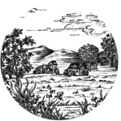
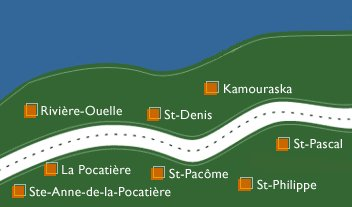

|
OMBÉLINE DIONNE
GRAND-MÈRE
MATERNELLE DE MARIE-ANNA
LA
SIXIÈME GÉNÉRATION GAGNON - DIONNE
Nos lignées Gagnon
et Dionne s'unissent à la sixième
génération.
François Gagnon épouse Ombéline Dionne le 24 juillet 1849 à Rivière-Ouelle.
|
Contexte
politique de l'époque

|
-
le milieu du 19ème siècle - le début de
l'industrialisation, la migration des populations vers les
villes, mais aussi vers la Nouvelle-Angleterre. |
Après les bouleversements
de la rébellion de 1837, les Canadiens vivent sous l'Acte
d'Union signé en 1840 et qui a créé le Haut et le Bas-Canada
(l'Ontario et le Québec). Les députés du Bas-Canada,
dont Louis-Hippolyte La Fontaine, établissent une distinction entre
les "deux peuples", en insistant sur le droit
d'ancienneté des Canadiens français. Les crises
politiques se succèdent. En 1849 le parlement
(mobile) siège à Montréal. La situation économique est
mauvaise à cause de lois anglaises sur la navigation et le
libre-échange qui favorisent les États-Unis plutôt que le
Canada. L'agitation est à son comble entre les
anglais et les français lorsque le gouvernement vote un bill
pour indemniser les Canadiens français des pertes subies lors
des troubles de 1837-1838. On s'en prend même à
l'intégrité physique des députés et le Parlement du
Canada-Uni est incendié le 25 avril 1849. Les émeutes se
poursuivent une partie de l'été.
Suit alors une poussée
annexionniste, c'est-à-dire la réunion de toutes les colonies
anglaises d'Amérique. L'instabilité politique du régime
d'Union, la poussée vers l'Ouest, favorisée par l'apparition
du chemin de fer, et la menace d'invasion d'un groupe américain
d'origine irlandaise qui va même jusqu'à une incursion armée
en 1866 aux frontières et qui répand dans le pays la psychose
de la guerre, ouvrent la voie à l'Acte de l'Amérique
britannique du Nord signé en 1867. Les colonies
anglaises doivent s'unir face aux États-Unis pour garder leur
identité et leur indépendance.
source: Histoire populaire du
Québec, Jacques Lacoursière.

|
|
CONTEXTE
SOCIAL
En 1849 les
Canadiens sont bien implantés dans la colonie, devenue anglaise
depuis près de cent ans. Leurs maisons et habitudes de vie
sont bien adaptées au rude pays. Ils luttent pour
garder leur langue et leur religion, mais subissent aussi des
influences anglaises et américaines. Plus aucun contact
avec la France depuis la défaite, aucun navire français n'a
navigué sur le fleuve depuis. La plupart
des Canadiens ne se reconnaissent plus dans cette mère-patrie qui
a vécu une révolution sanglante, est devenue anticléricale,
et qui, de nouveau en 1848, a vécu une autre révolution qui la mènera
au second Empire en 1850.
|
|
Cornélius Krieghoff (1815-1872), originaire d'Hollande,
arrive au Canada en 1840. Il s'installe à Montréal en 1846 et se met à peindre
ce qu'il voit. Il est reconnu en tant que peintre de scènes
rurales, captant les détails de la vie dans un rude climat: le défrichage, les voyages...
Aujourd'hui, son oeuvre constitue un registre important et éloquent de l'héritage canadien, tout particulièrement celui du
Québec.
|
|
|
 François
et Ombéline,
lors de leur mariage à l'été 1849, sont loin des émeutes de
Montréal mais ils ont sûrement des échos de l'agitation politique. Ils s'épousent à
Rivière-Ouelle mais leur
premier enfant naît en 1850 à Ste-Anne de la Pocatière,
leur cinquième en 1855 à Trois-Pistoles,
leur douzième en 1865 à St-Pacôme.
La famille déménage plusieurs fois, probablement en fonction du
travail du père.
Est-il agriculteur, travailleur forestier,
commerçant,..?
Ombéline décède en 1874 et François en
1896.


|
|
LA SEPTIÈME
GÉNÉRATION QUITTE LE BAS DU FLEUVE |
|
François Gagnon et Ombéline Dionne ont
quatorze enfants et tous suivent le modèle de leur époque où les gens
migrent vers les villes. Tous les enfants quittent leur région
natale pour Montréal, Chicoutimi ou une autre ville. À partir de
cette septième génération, nous n'avons plus de lien avec le Bas du
Fleuve dans cette lignée.
|
- FRANÇOIS, baptisé le 20 mai 1850 à
Ste-Anne de la Pocatière. Décédé le 6 mars 1920 à
St-Hyacinthe.
- JOSEPH, baptisé le 1 septembre 1851
à Ste-Anne de la Pocatière. Marié à Zénobie Morin en
1874, puis à Louise Tremblay en 1882. Décédé à Chicoutimi
le 10 juin 1924.
- LÉONTINE, baptisée le 9 mars 1853 à
Ste-Anne de la Pocatière. Mariée à Napoléon Morin le 7
octobre 1873. Décédée à Chicoutimi le 24 aoüt 1930.
- CHARLES, baptisé le 21 mai 1854 à
Ste-Anne de la Pocatière. Marié à Sophie Sirois le 9
mai 1887. Décédé à Montréal le 23 avril 1932.
- JUSTINE, baptisée le 12 septembre
1855 à Trois-Pistoles. Mariée à Eugène Morin, puis à
Arthur Breton. Décédée à Montréal le 1 janvier 1935.
- HENRIETTE, baptisée le 6 janvier 1857
à Trois-Pistoles. Mariée à Jean-Baptiste Daigneault.
Décédée à Montréal le 12 mars 1942.
- OBÉLINE, baptisée le 14 mars 1858 à
Trois-Pistoles. Mariée à Joseph Langlois en 1880.
Décédée à Disraéli (Beauce) le 20 novembre 1938.
- MARIE-LOUISE-CÉSARINE, baptisée le
14 juillet 1859 à Trois-Pistoles. Mariée à Wilfrid Morin le
18 avril 1882. Décédée à Chicoutimi le 19 février 1940.
- PIERRE-ALPHONSE, baptisé le 22
février 1861 à Trois-Pistoles. Marié à Alice Leclerc en
1889. Décédé à Québec le 9 mars 1936.
- JOSEPH-HORACE, baptisé le 12 août
1862 à Trois-Pistoles. Marié à Justine Lévesque le 20
avril 1885. Décédé à Chicoutimi le 15 avril 1919.
- ARTHÉMISE, baptisée le 21 février
1864 à Trois-Pistoles. Mariée à Xavier Morin le 29 mai
1882. Décédée à Chicoutimi le 18 mai 1912.
- MARIE, baptisée le 1 octobre 1865 à
St-Pacôme. Mariée à Salomon Bédard en 1886. Décédée à Montréal le 12 septembre 1928.
- CÉLINA, baptisée le 1 octobre 1867
à St-Pacôme. Mariée à Elzéar Lapointe.
- ALPHONSINE,
baptisée le 25 août 1869 à St-Pacôme. Mariée à Arthur
Caron, puis à Zénon Laframboise. Décédée à Montréal le
12 octobre 1929.


|
|